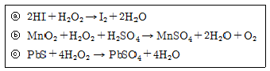
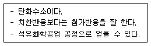
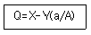
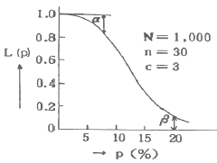

위험물기능장 (2014-07-20 기출문제)
1과목: 임의구분
1. 다음 반응에서 과산화수소가 산화제로 작용한 것은?

- ⓐ, ⓑ
- ⓐ, ⓒ
- ⓑ, ⓒ
- ⓐ, ⓑ, ⓒ
(정답률: 77%)

2. 위험물안전관리법령에서 정한 자기반응성 물질이 아닌 것은?
- 유기금속화합물
- 유기과산화물
- 금속의 아지화합물
- 질산구아니딘
(정답률: 67%)
3. 다음 중 강화액 소화기의 방출방식으로 가장 많이 쓰이는 것은?
- 가스 가압식
- 반응식(파병식)
- 축압식
- 전도식
(정답률: 89%)
4. 다음 중 인화점이 가장 낮은 물질은?
- 이소프로필알코올
- n-부틸알코올
- 에틸렌글리콜
- 아세트산
(정답률: 65%)
5. 위험물안전관리법령상 위험물의 운송 시 혼재할 수 없는 위험물은? (단, 지정수량의 1/10초과의 위험물이다.)
- 적린과 경유
- 칼륨과 등유
- 아세톤과 니트로셀룰로오스
- 과산화칼륨과 크실렌
(정답률: 84%)
6. 스프링클러소화설비가 전체적으로 적응성이 있는 대상물은?
- 제1류 위험물
- 제2류 위험물
- 제4류 위험물
- 제5류 위험물
(정답률: 78%)
7. 위험물안전관리법령에서 정한 위험물을 수납하는 경우의 운반용기에 관한 기준으로 옳은 것은?
- 고체 위험물은 운반용기 내용적의 98% 이하로 수납한다.
- 액체 위험물은 운반용기 내용적의 95% 이하로 수납한다.
- 고체 위험물의 내용적은 25[℃]를 기준으로한다.
- 액체 위험물은 55[℃]에서 누설되지 않도록 공간용적을 유지하여야 한다.
(정답률: 85%)
8. 비중이 1.15인 소금물이 무한히 큰 탱크의 밑면에서 내경 3[cm]인 관을 통하여 유출된다. 유출구 끝이 탱크 수면으로부터 3.2m 하부에 있다면 유출 속도는 얼마인가? (단, 배출시의 마찰 손실은 무시한다.)
- 2.92[m/s]
- 5.92[m/s]
- 7.92[m/s]
- 12.92[m/s]
(정답률: 62%)
9. Halon 1211과 Halon 1301 소화약제에 대한 설명 중 틀린 것은?
- 모두 부촉매 효과가 있다.
- 증기는 모두 공기보다 무겁다.
- 증기비중과 액체비중 모두 Halon 1211이 더 크다.
- 소화기의 유효방사거리는 Halon 1301이 더 길다.
(정답률: 85%)
10. 물체의 표면온도가 200[℃]에서 500[℃]로 상승하면 열복사량은 약 몇 배 증가하는가?
- 3.3
- 7.1
- 18.5
- 39.2
(정답률: 63%)
11. 과염소산의 취급·저장 시 주의사항으로 틀린 것은?
- 가열하면 폭발할 위험이 있으므로 주의한다.
- 종이, 나무조각 등과 접촉을 피하여야 한다.
- 구멍이 뚫린 코르크 마개를 사용하여 통풍이 잘되는 곳에 저장한다.
- 물과 접촉하면 심하게 반응하므로 접촉을 금지한다.
(정답률: 89%)
12. TNT와 니트로글리세린에 대한 설명 중 틀린 것은?
- TNT는 햇빛에 노출되면 다갈색으로 변한다.
- 모두 폭약의 원료로 사용될 수 있다.
- 위험물안전관리법령상 품명은 서로 다르다.
- 니트로글리세린은 상온(약25[℃])에서 고체이다.
(정답률: 74%)
13. 단백질 검출반응과 관련이 있는 위험물은
- HNO3
- HClO3
- HClO2
- H2O2
(정답률: 85%)
14. 휘발유를 저장하는 옥외탱크저장소의 하나의 방유제안에 10000L, 20000L 탱크 각각 1기가 설치되어 있다. 방유제의 용량은 몇 L 이상이어야 하는가?
- 11,000
- 20,000
- 22,000
- 30,000
(정답률: 87%)
15. 위험물제조소내의 위험물을 취급하는 배관은 최대상용압력의 몇 배 이상의 압력으로 수압시험을 실시하여 이상이 없어야 하는가?
- 1.1
- 1.5
- 2.1
- 2.5
(정답률: 94%)
16. 위험물의 저장 또는 취급하는 방법을 설명한 것 중 틀린 것은?
- 산화프로필렌 : 저장시 은으로 제작된 용기에 질소가스와 같은 불연성가스를 충전하여 보관한다.
- 이황화탄소 : 용기나 탱크에 저장 시 물로 덮어서 보관한다.
- 알킬알루미늄 : 용기는 완전 밀봉하고 질소등 불활성가스를 충전한다.
- 아세트알데히드 : 냉암소에 저장한다.
(정답률: 84%)
17. 다음 중 품목을 달리하는 위험물을 동일장소에 저장할 경우 위험물의 시설로서 허가를 받아야 할 수량을 저장하고 있는 것은? (단, 제4류 위험물의 경우 비수용성이고 수량 이외의 저장기준은 고려하지 않는다.)
- 이황화탄소 10[ℓ], 가솔린 20[ℓ]L와 칼륨 3[kg]을 취급하는 곳
- 가솔린 60[ℓ]L, 등유 300[ℓ]와 중유 950[ℓ]를 취급하는 곳
- 경유 600[ℓ], 나트륨 1[kg]과 무기과산화물 10[kg]을 취급하는 곳
- 황 10[kg], 등유 300[ℓ]와 황린 10[kg]을 취급하는 곳
(정답률: 73%)
18. 산소 16g과 수소 4g이 반응할 때 몇 g 의물을 얻을 수 있는가?
- 9g
- 16g
- 18g
- 36g
(정답률: 76%)
19. 위험물제조소의 환기설비에 대한 기준에 대한 설명 중 옳지 않은 것은?
- 환기는 팬을 사용한 국소배기방식으로 설치하여야 한다.
- 급기구는 바닥면적 150[m2]마다 1개 이상으로 한다.
- 급기구는 낮은 곳에 설치하고 가는 눈의 구리망 등으로 인화방지망을 설치해야 한다.
- 환기구는 회전식 고정벤티레이터 또는 루푸팬방식으로 설치한다.
(정답률: 79%)
20. 하나의 특정한 사고 원인의 관계를 논리게이트를 이용하여 도해적으로 분석하여 연역적·정량적 기법으로 해석해 가면서 위험성을 평가하는 방법은?
- FTA(결함수 분석기법)
- PHA(예비위험 분석기법)
- ETA(사건수 분석기법)
- FMECA(이상위험도 분석기법)
(정답률: 81%)
2과목: 임의구분
21. 제4류 위험물 중 점도가 높고 비휘발성인 제3석유류 또는 제4석유류의 주된 연소형태는?
- 증발연소
- 표면연소
- 분해연소
- 불꽃연소
(정답률: 72%)
22. 마그네슘 화재를 소화할 때 사용하는 소화약제의 적응성에 대한 설명으로 잘못된 것은?
- 건조사에 의한 질식소화는 오히려 폭발적인 반응을 일으키므로 소화 적응성이 없다.
- 물을 주수하면 폭발의 위험이 있으므로 소화 적응성이 없다.
- 이산화탄소는 연소반응을 일으키며 일산화탄소를 발생하므로 소화 적응성이 없다.
- 할로겐화합물과 반응하므로 소화적응성이없다.
(정답률: 85%)
23. 다음 물질이 연소의 3요소 중 하나의 역할을 한다고 했을 때 그 역할이 나머지 셋과 다른 하나는?
- 삼산화크롬
- 적린
- 황린
- 이황화탄소
(정답률: 76%)
24. 다음 중 위험물안전관리법령에서 정한 위험물의 지정수량이 가장 작은 것은?
- 브롬산염류
- 금속의 인화물
- 니트로소화합물
- 과염소산
(정답률: 64%)
25. 황이 연소하여 발생하는 가스의 성질로 옳은 것은?
- 무색 무취이다.
- 물에 녹지 않는다.
- 공기보다 무겁다.
- 분자식은 H2S 이다.
(정답률: 59%)
26. 정전기와 관련해서 유체 또는 고체에 의해 한 표면에서 다른 표면으로 전자가 전달될 때 발생하는 전기의 흐름을 무엇이라고 하는가?
- 유도전류
- 전도전류
- 유동전류
- 변위전류
(정답률: 80%)
27. 다음 [보기]와 같은 공통점을 갖지 않는 것은?

- 에텐
- 프로필렌
- 부텐
- 벤젠
(정답률: 84%)
28. 에탄올과 진한 황산을 섞고 170[℃]로 가열하여 얻어지는 기체 탄화수소(A)에 브롬을 작용시켜 20[℃]에서 액체화합물(B)을 얻었다. 화합물 A와 B의 화학식은?
- A : C2H2 B : CH3-CHBr2
- A : C2H4 B : CH2Br-CH2Br
- A : C2H5OC2H5 B : C2H4BrOC2H4Br
- A : C2H6 B : CHBr=CHBr
(정답률: 68%)
29. 다음 위험물 중에서 지정수량이 나머지 셋과 다른 것은?
- KBrO3
- KNO3
- KIO3
- KClO3
(정답률: 75%)
30. 위험물안전관리법령상 할로겐화물소화설비의 기준에서 용적식 국소방출방식에 대한 저장소화약제 양은 다음의 식을 이용하여 산출한다. 하론 1211의 경우에 해당하는 X와 Y의 값으로 옳은 것은? (단, Q는 단위체적당 소화약제의 양(kg/m3), a는 방호대상물 주위에 실제로 설치된 고정벽의 면적합계(m2), A는 방호공간 전체둘레의 면적(m2)이다.)

- X : 5.2, Y : 3.9
- X : 4.4, Y : 3.3
- X : 4.0, Y : 3.0
- X : 3.2, Y : 2.7
(정답률: 77%)
31. 다음 중 알칼리토금속의 과산화물로서 비중이 약 4.96, 융점이 약 450[℃]인 것으로 비교적 안정한 물질은?
- BaO2
- CaO2
- MgO2
- BeO2
(정답률: 81%)
32. 제2종 분말소화약제가 열분해할 때 생성되는 물질로 4[℃]부근에서 최대 밀도를 가지며 분자내 104.5°의 결합각을 갖는 것은?
- CO2
- H2O
- H3PO4
- K2CO3
(정답률: 78%)
33. 다음 중 제1류 위험물이 아닌 것은?
- LiClO
- NaClO2
- KClO3
- HClO4
(정답률: 84%)
34. 임계온도에 대한 설명으로 옳은 것은?
- 임계온도보다 낮은 온도에서 기체는 압력을 가하면 액체로 변화할 수 있다.
- 임계온도보다 높은 온도에서 기체는 압력을 가하면 액체로 변화할 수 있다.
- 이산화탄소의 임계온도는 약 -119[℃]이다.
- 물질의 종류에 상관없이 동일부피, 동일압력에서는 같은 임계온도를 갖는다.
(정답률: 70%)
35. 위험물안전관리법령에서 정한 위험물의 유별에 따른 성질에서 물질의 상태는 다르지만 성질이 같은 것은?
- 제1류와 제6류
- 제2류와 제5류
- 제3류와 제5류
- 제4류와 제6류
(정답률: 90%)
36. 다음 중 물보다 무거운 물질은?
- 디에틸에테르
- 칼륨
- 산화프로필렌
- 탄화알루미늄
(정답률: 64%)
37. 위험물안전관리법령상 국소방출방식의 이산화탄소소화설비 중 저압식 저장 용기에 설치되는 압력경보장치는 어느 압력 범위에서 작동하는 것으로 설치하여야 하는가?
- 2.3MPa 이상의 압력과 1.9MPa 이하의 압력에서 작동하는 것
- 2.5MPa 이상의 압력과 2.0MPa 이하의 압력에서 작동하는 것
- 2.7MPa 이상의 압력과 2.3MPa 이하의 압력에서 작동하는 것
- 3.0MPa 이상의 압력과 2.5MPa 이하의 압력에서 작동하는 것
(정답률: 90%)
38. 옥내저장소에 가솔린 18[ℓ] 용기 100개, 아세톤 200[ℓ] 드럼통 10개, 경유 200[ℓ] 드럼통 8개를 저장하고 있다. 이 저장소에는 지정수량의 몇 배를 저장하고 있는가?
- 10.8배
- 11.6배
- 15.6배
- 16.6배
(정답률: 75%)
39. 공기 중 약 34[℃]에서 자연발화의 위험이 있기 때문에 물속에 보관해야 하는 위험물은?
- 황화린
- 이황화탄소
- 황린
- 탄화알루미늄
(정답률: 84%)
40. 어떤 액체 연료의 질량조성이 C 75%, H25% 일 때 C : H 의 mole 비는?
- 1:3
- 1:4
- 4:1
- 3:1
(정답률: 72%)
3과목: 임의구분
41. 다음 중 은백색의 금속으로 가장 가볍고, 물과 반응 시 수소가스를 발생시키는 것은?
- Al
- Na
- Li
- Si
(정답률: 73%)
42. 위험물안전관리법령상 원칙적인 경우에 있어서 이동저장탱크의 내부는 몇 리터 이하마다 3.2[mm] 이상의 강철판으로 칸막이를 설치해야 하는가?
- 2000
- 3000
- 4000
- 5000
(정답률: 81%)
43. 다음 중 요오드값이 가장 높은 것은?
- 참기름
- 채종유
- 동유
- 땅콩기름
(정답률: 89%)
44. 위험물이송취급소에 설치하는 경보설비가 아닌 것은?
- 비상벨장치
- 확성장치
- 가연성증기경보장치
- 비상방송설비
(정답률: 71%)
45. 위험물제조소등에 설치하는 옥내소화전설비 또는 옥외소화전설비의 설치기준으로 옳지않은 것은?
- 옥내소화전설비의 각 노즐 선단 방수량 : 260[ℓ/min]
- 옥내소화전설비의 비상전원 용량 : 45분 이상
- 옥외소화전설비의 각 노즐 선단 방수량 : 260[ℓ/min]
- 표시등 회로의 배선공사 : 금속관공사, 가요전선관공사, 금속덕트공사, 케이블공사
(정답률: 84%)
46. NH4NO3에 대한 설명으로 옳은 것은?
- 물에 녹을 때는 발열반응을 일으킨다.
- 트리니트로페놀과 혼합하여 안포폭약을 제조하는데 사용된다.
- 가열하면 수소, 발생기산소 등 다량의 가스를 발생한다.
- 비중이 물보다 크고, 흡습성과 조해성이 있다.
(정답률: 67%)
47. 과산화나트륨의 저장법으로 가장 옳은 것은?
- 용기는 밀전 및 밀봉하여야 한다.
- 안정제로 황분 또는 알루미늄분을 넣어 준다.
- 수증기를 혼입해서 공기와 직접 접촉을 방지한다.
- 저장시설 내에 스프링클러설비를 설치한다.
(정답률: 84%)
48. 위험물안전관리법령상 제조소등의 관계인은 그 제조소등의 용도를 폐지한 때에는 폐지한 날로부터 며칠 이내에 신고하여야 하는가?
- 7일
- 14일
- 30일
- 90일
(정답률: 83%)
49. 유황에 대한 설명 중 옳지 않은 것은?
- 물에 녹지 않는다.
- 일정 크기 이상을 위험물로 분류한다.
- 고온에서 수소와 반응할 수 있다.
- 청색 불꽃을 내며 연소한다.
(정답률: 60%)
50. 다음 중 Cl의 산화수가 +3 인 물질은?
- HClO4
- HClO3
- HClO2
- HClO
(정답률: 82%)
51. 황화린에 대한 설명으로 틀린 것은?
- P4S3, P2S5, P4S7은 동소체이다.
- 지정수량은 100kg이다.
- 삼황화린의 연소생성물에는 이산화황이 포함된다.
- 오황화린은 물 또는 알칼리에 분해하여 이황화탄소와 황산이 된다.
(정답률: 82%)
52. 소화약제가 환경에 미치는 영향을 표시하는 지수가 아닌 것은?
- ODP
- GWP
- ALT
- LOAEL
(정답률: 86%)
53. 위험물안전관리법령상 위험등급II에 속하는 위험물은?
- 제1류 위험물 중 과염소산염류
- 제4류 위험물 중 제2석유류
- 제5류 위험물 중 니트로화합물
- 제3류 위험물 중 황린
(정답률: 58%)
54. 위험물의 반응에 대한 설명 중 틀린 것은?
- 트리에틸알루미늄은 물과 반응하여 수소가스를 발생한다.
- 황린의 연소생성물은 P2O5이다.
- 리튬은 물과 반응하여 수소가스를 발생한다.
- 아세트알데히드의 연소생성물은 CO2와 H2O이다.
(정답률: 71%)
55. np관리도에서 시료군마다 시료수(n)는 100이고, 시료군의 수(k)는 20, Σnp=77 이다. 이때 np관리도의 관리상한선(UCL)을 구하면 약 얼마인가?
- 8.94
- 3.85
- 5.77
- 9.62
(정답률: 51%)
56. 그림의 OC곡선을 보고 가장 올바른 내용을 나타낸 것은?

- α : 소비자 위험
- L(P) : 로트가 합격할 확률
- β : 생산자 위험
- 부적합품률 : 0.03
(정답률: 79%)
57. 미국의 마틴 마리에타사(Martin Marietta Corp.)에서 시작된 품질개선을 위한 동기부여 프로그램으로, 모든 작업자가 무결점을 목표로 설정하고, 처음부터 작업을 올바르게 수행함으로써 품질비용을 줄이기 위한 프로그램은 무엇인가?
- TPM 활동
- 6 시그마 운동
- ZD 운동
- ISO 9001 인증
(정답률: 86%)
58. 다음 중 단속생산 시스템과 비교한 연속생산 시스템의 특징으로 옳은 것은?
- 단위당 생산원가가 낮다.
- 다품종 소량생산에 적합하다.
- 생산방식은 주문생산방식이다.
- 생산설비는 범용설비를 사용한다.
(정답률: 83%)
59. 일정 통제를 할 때 1일당 그 작업을 단축하는데 소요되는 비용의 증가를 의미하는 것은?
- 정상소요시간 (Normal duration time)
- 비용견적 (Cost estimation)
- 비용구배 (Cost slope)
- 총비용 (Total cost)
(정답률: 86%)
60. MTM(Method Time Measurement)법에서 사용되는 1 TMU(Time Measurement Unit)는 몇 시간인가?
- 1/100,000 시간
- 1/10,000 시간
- 6/10,000 시간
- 36/1,000 시간
(정답률: 80%)